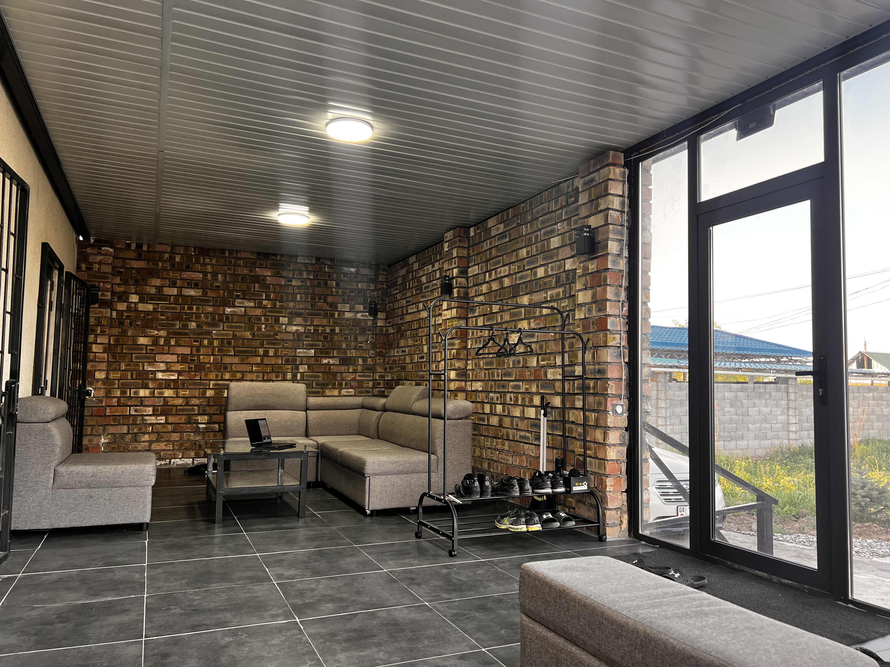
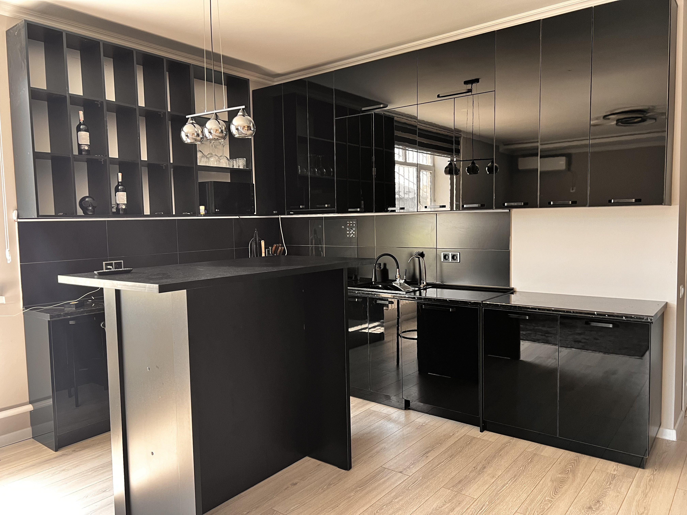

Experience the beauty of Kyrgyzstan
Join us for an unforgettable stay in our guesthouse.
Join us for an unforgettable stay in our guesthouse.
Your Luxurious Retreat in Kyrgyzstan Escape to Terrabella Guesthouse, a serene mountain haven in Arashan, just 15 minutes from Bishkek, Kyrgyzstan. Nestled amidst breathtaking landscapes and fresh alpine air, this modern guesthouse offers the perfect blend of comfort, elegance, and adventure for travelers seeking an unforgettable stay.

Terrabella features three spacious bedrooms, ideal for families, groups, or couples. Each room is designed for ultimate comfort, with modern amenities, free Wi-Fi, and select rooms boasting private terraces with stunning mountain views. The guesthouse accommodates up to 12 guests, making it perfect for intimate gatherings or retreats.

Host productive meetings or events in the conference room, designed to seat 12 people. Equipped with modern technology, it’s ideal for business retreats, workshops, or team-building sessions, all set against the inspiring backdrop of Kyrgyzstan’s celestial mountains.

Stay active in the state-of-the-art smart gym, featuring cutting-edge fitness equipment to keep you energized during your stay. Whether you’re a fitness enthusiast or just want a quick workout, the gym caters to all levels.

Indulge in culinary delights with breakfast, lunch, and dinner included. Start your day with a delicious spread offering Asian, vegetarian, or halal options. Savor hearty lunches and dinners featuring traditional Kyrgyz cuisine, or elevate your evening with a romantic dinner under the stars, crafted for special moments. The fully equipped kitchen allows guests to prepare their own meals, while the bar serves refreshing drinks to unwind.

Relax on the comfortable veranda, where you can soak in panoramic mountain views, sip coffee, or enjoy a quiet evening. It’s the perfect spot to connect with nature or share stories with fellow travelers.
The fully equipped kitchen allows guests to prepare their own meals, while the bar serves refreshing drinks to unwind. Enjoy a cozy dining experience with family and friends in the inviting dining area.
Unwind in the cozy coffee corner, where you can enjoy a cup of freshly brewed coffee or tea while taking in the stunning mountain views. It’s the perfect spot to relax and recharge after a day of exploring.
 Additional Amenities
Lush garden for tranquil strolls
Free private parking for convenience
Proximity to hiking trails and local attractions like the Burana Tower and hot springs
Traditional Kyrgyz dining experiences available for breakfast, lunch, and dinner
Additional Amenities
Lush garden for tranquil strolls
Free private parking for convenience
Proximity to hiking trails and local attractions like the Burana Tower and hot springs
Traditional Kyrgyz dining experiences available for breakfast, lunch, and dinner
Ready to experience Terrabella Guesthouse? Visit our website for exclusive offers, personalized itineraries, and travel tips to explore Kyrgyzstan’s wonders. Reserve your spot today and discover the magic of this mountain retreat!
We are located in the beautiful mountains of Kyrgyzstan, just a short drive from Bishkek. Our guesthouse is surrounded by stunning landscapes and offers a peaceful retreat for our guests.